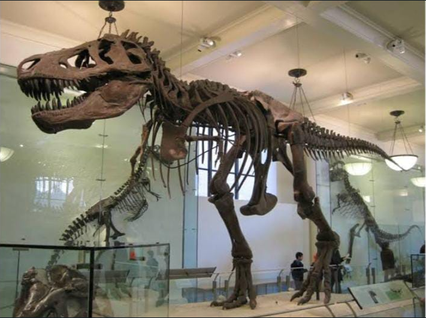
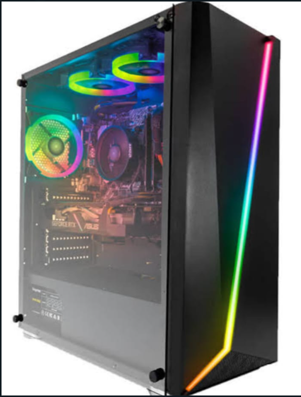
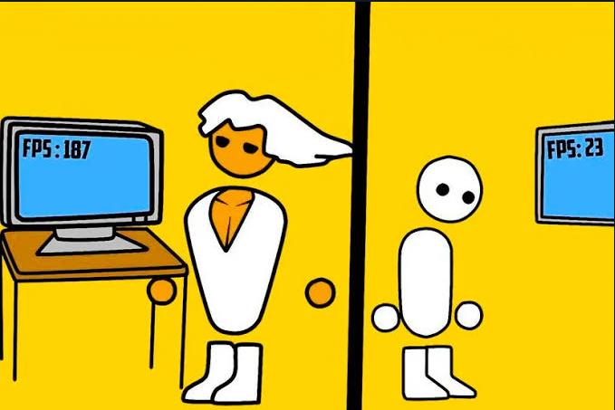
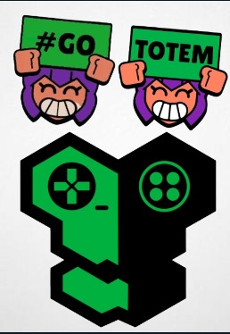

| Icono | Nombre | Datos | Descipcion |
|---|---|---|---|
|  | Luis Santiago Ortega Alvarado |
Matricula: 2211344 Numero de lisa: #26 Grupo: 3L1 |
Soy una persona buena con varias especialidades en técnico en programación web, en mis tiempos libres busco documentación de otros códigos para implementar los en los mío y siempre busco mejor mi metodología de programación al igual que mis conocimientos en Javascript |
|  | Angel Yahir Mata Perez |
Matricula: 2211395 Numero de lista: #24 Grupo: 3L1 |
Me describo como una persona sencilla, responsable y social |
Patricio Gerard Reyes Herrera |
Matricula: 2211615 Numero de lista: #31 Grupo: 3L1 |
Me describo como una persona divertida y creativa que siempre tiene nuevas ideas para plasmar en diferentes medios | |
Kevin Daniel Sandoval Martinez |
Matricula: 2211578 Numero de lista: #35 Grupo: 3L1 |
Buenas soy Kevin, soy una persona que le gustan los videojuegos, el fútbol, comer y dormir. | |
Nestor Daniel Sandoval Martinez |
Matricula: 2211579 Numero de lista: #36 Grupo: 3L1 |
Soy una persona amigable, un poco seria algunas veces y concentrada, cometo muchos errores pero se aprender de ellos, algo de lo cual estoy orgulloso de mi, a veces soy un poco irresponsable y de cierta forma eso de igual forma me caracteriza | |
|  | Luis Fernando Méndez Linares |
Matricula: 2211530 Numero de lista: #25 Grupo: 3L1 |
Me considero fan de la tecnología y alguien divertido. |
Andre Abisai González Martínez |
Matricula: 2211625 Numero de lista: #15 Grupo: 3L1 |
Soy Andre y tengo 16 años, me gustan los videojuegos, el futbol y programar, mi comida favorita es la milanesa y arriba el Monterrey | |
Andes de Jesus Rendon Cruz |
Matricula: 2211104 Numero de lista: #30 Grupo: 3L1 |
Soy alguien decidido que simpre busca lo mejor de si mismo | |
|  | Martin Vanderley Palacios Perez |
Matricula: 2211201 Numero de lista: #27 Grupo: 3L1 |
Me considero una persona amande de la musica antigua y de los videojuegos tanto retros y los juegos actuales, me gusta el futbol y la nadar |